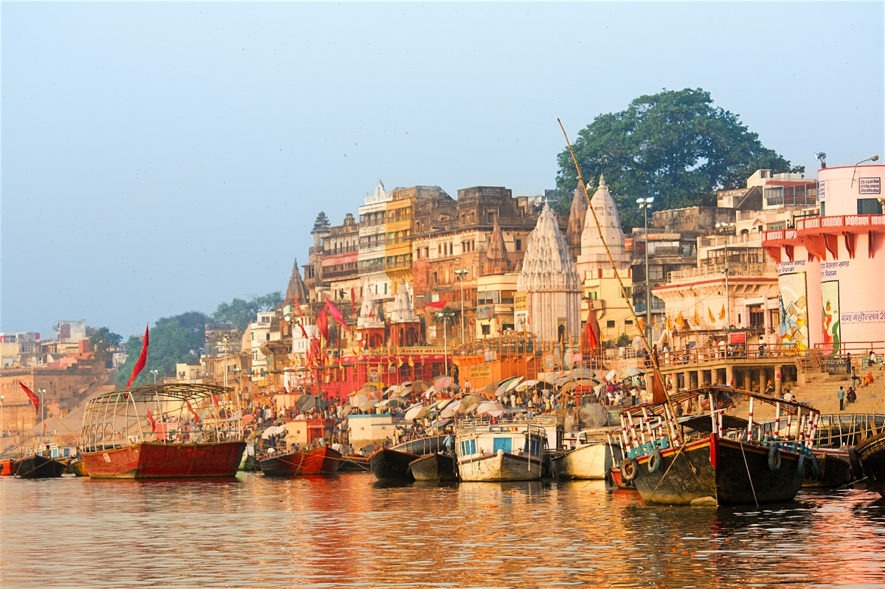

India (official name: the Republic of India; Hindi: Bhārat Gaṇarājya) is a country in South Asia. It is the seventh-largest country by area, the second-most populous country, and the most populous democracy in the world. Bounded by the Indian Ocean on the south, the Arabian Sea on the southwest, and the Bay of Bengal on the southeast, it shares land borders with Pakistan to the west;[e] China, Nepal, and Bhutan to the north; and Bangladesh and Myanmar to the east. In the Indian Ocean, India is in the vicinity of Sri Lanka and the Maldives; its Andaman and Nicobar Islands share a maritime border with Thailand and Indonesia.
THE TAJ MAHAL,AGRA: The Taj Mahal is an ivory-white marble mausoleum on the south bank of the Yamuna river in the Indian city of Agra. It was commissioned in 1632 by the Mughal emperor, Shah Jahan, to house the tomb of his favourite wife, Mumtaz Mahal. It also houses the tomb of Shah Jahan, the builder. The Taj Mahal is considered to be the greatest architectural achievement in the whole range of Indo-Islamic architecture. Its recognised architectonic beauty has a rhythmic combination of solids and voids, concave and convex and light shadow; such as arches and domes further increases the aesthetic aspect. The colour combination of lush green scape reddish pathway and blue sky over it show cases the monument in ever changing tints and moods.
THE QUTUB MINAR: DescriptionThe Qutb Minar, also spelled as Qutab Minar or Qutub Minar, is a minaret that forms part of the Qutb complex, a UNESCO World Heritage Site in the Mehrauli area of Delhi, India. Qutb Minar is a 73-metre tall tapering tower of five storeys, with a 14.3 metres base diameter, reducing to 2.7 metres at the top of the peak Qutb ud Din Aibak, founder of the Delhi Sultanate, started construction of the Qutb Minar's first storey around 1192. In 1220, Aibak's successor and son-in-law Shamsuddin Iltutmish completed a further three storeys. In 1369, a lightning strike destroyed the top storey. Firoz Shah Tughlaq replaced the damaged storey, and added one more. Sher Shah Suri also added an entrance to this tower while he was ruling and Humayun was in exile.
VARNASI:  There are many spiritual places in India and if you want to understand more about India’s rich culture, spirituality and religion then Varanasi is an essential stop on any Indian adventure. India has attracted spiritual seekers since time immemorial and the holiest places to visit in India, and one of the oldest inhabited cities in the whole world, is the ancient city of Varanasi situated on the banks of the holy Ganges river. Visiting Varanasi is quite an experience as Hindus believe that dying here releases you from the cycle of death and rebirth and being cremated along the holy river is very auspicious for Hindus and a unique and unforgettable sight for tourists.
THE INDIA GATE,DELHI: The India Gate is located in the center of New Delhi, the capital of India. It was made by Edwin Lutyens In 1921. This landmark in Delhi commemorates the members of the erstwhile British Indian Army who sacrificed their lives fighting for the Indian Empire in the Afghan Wars and World War. India Gate is a memorial to 70,000 soldiers of the British Indian Army who died in the period 1914–21 in the First World War, in France, Flanders, Mesopotamia, Persia, East Africa, Gallipoli and elsewhere in the Near and the Far East, and the Second Anglo-Afghan War. 13,300 servicemen's names, including some soldiers and officers from the United Kingdom, are inscribed on the gate. The India Gate, even though a war memorial, evokes the architectural style of the triumphal arch like the Arch of Constantine, outside the Colosseum in Rome, and is often compared to the Arc de Triomphe in Paris, and the Gateway of India in Mumbai. It was designed by Sir Edwin Lutyens.
HAWA MAHAL,JAIPUR: Hawa Mahal (English translation: "The Palace of Winds" or "The Palace of Breeze") is a palace in Jaipur, India. Made with the red and pink sandstone, the palace sits on the edge of the City Palace, Jaipur, and extends to the Zenana, or women's chambers. The structure was built in 1799 by Maharaja Sawai Pratap Singh, the grandson of Sawai Jai Singh, who was the founder of Jaipur[1]. He was so inspired by the unique structure of Khetri Mahal that he built this grand and historical palace. It was designed by Lal Chand Ustad. Its unique five floors exterior is akin to the honeycomb of a beehive with its 953 small windows called Jharokhas decorated with intricate latticework.[2] The original intent of the lattice design was to allow royal ladies to observe everyday life and festivals celebrated in the street below without being seen, since they had to obey the strict rules of "purdah", which forbade them from appearing in public without face coverings.